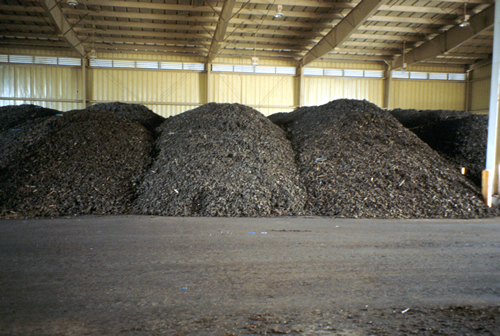

Composting
What is it?
Composting for agricultural lands includes utilizing manure from livestock, excess plant materials from crop harvests, and animal mortalities. Composting in urban or residential areas can include lawn clippings, trimmed branches, vegetable and food waste, and even pet waste. The manure or plant material is converted into useable organic material and nutrients through a variety of composting methods. The composted material can then be applied to fields, patures, or gardens to supplement soil nutrients and organic material and increase water infiltration.
 (photo from Washington State University)
Conservation Benefits
- Reduces the amount of nutrients and organic matter entering streams
- Reduces the amount of fertilizer needed in fields or pastures
What does it include?
Composting initially involves picking an appropriate site on the ranch, farm, or property. Sites should not be located in low lying areas near streams or along natural drainage ways. Composting methods include turning, active aeration, passive aeration, static piles, in-vessel, and vermicomposting. Determining the method of composting will depend on materials to be composted, turnover time needed, and location in the state (climate considerations).
Composting Links
- Agricultural composting basics (Ontario Ministry of Agriculture and Food)
- Basic on-farm composting manual (Land Technologies)
- Compost uses for farmers (State of Vermont Agency of Natural Resources Compost Center)
- Composting (TCEQ)
- Composting dead livestock: a new solution to an old problem (Iowa State University)
- Lawn waste disposal/composting (GreenCo)
- On-farm composting handbook (Northeast Regional Agricultural Engineering Service Cooperative Extension)
- On-farm composting methods (FAO)
- On-farm composting (PennState Cooperative Extension)
- Residential stormwater pollution solutions: compost or mulch yard wastes (AgriLife Extension)
- Urban food waste composting (McGill University thesis)
Composting Bibliography
- Bekele et al. 2006. Impacts of a manure composting program on stream water quality. American Society of Agricultural and Biological Engineers 49: 389-400.
- Inbar et al. 1993. Recycling of cattle manure: the composting process and characterization of maturity. Journal of Environmental Quality 22: 857-863.
- Osei et al. 2000. Economic and environmental impacts of alternative practices on dairy farms in an agricultural watershed. Journal of Soil and Water Conservation 55: 466-472.